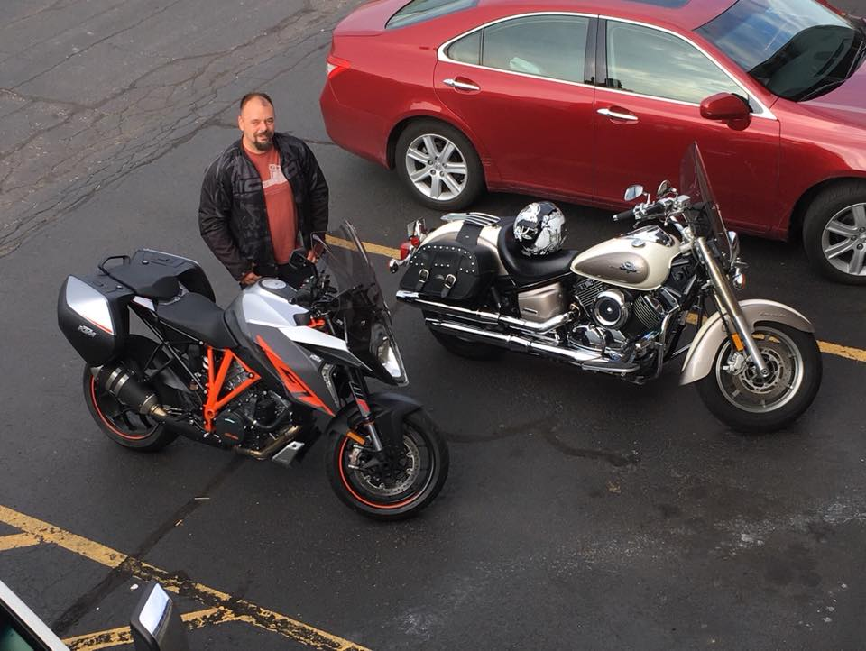
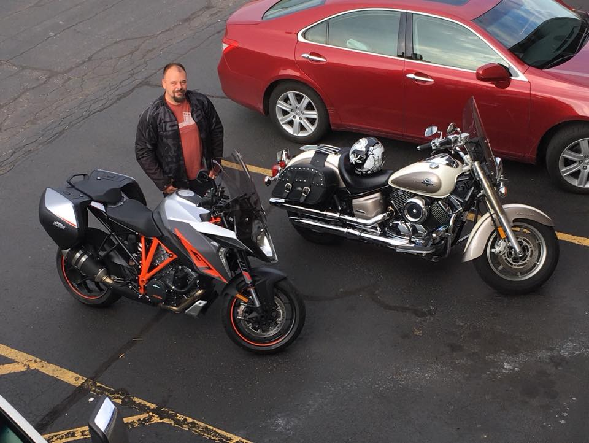

Jason Gilbert
My history at a glance
My Coding Journey
My coding journey started like most I suspect, in high school. I took an intro to web design class and ended up hating it. It was "drag and drop" GUI based, Front Page I think, and it didn't appeal to me at the time. If I had a glimpse at my current self, I would have stuck with it. I had other interests at that time and only took the one class, not that there was a lot offered then. I set it all on the back burner until about 2 years ago. I noticed the need for some better applications at my current job. I started getting into Python and SQL to see if I could make a difference. While I don't have much time during working hours, I spent a lot of off hours reading and practicing some. Along the way I joined a small group within my current job that met during lunch to learn intro to programming. It has covered a lot of things but not a lot of actual hands on practice. I enrolled in a U of M Coursera class: Python for Everybody Specialization and finished the course (Certificate). Solo Learn (mobile app) was another approach I took to learning basic concepts of PHP, SQL, JS, CSS, and HTML. It has been a very slow road for me, but I'm looking forward to finding a good direction and a place where I fit.
Williams International (Employment)
Repair and Overhaul Specialist (2013-present)
My current role as an R&O Specialist is multi-faceted. My duties include managing shelf life material, balancing components, running the engine test cell, general repair of engines and components, training junior members of the team, inspection of engines, and occasionally filling the Lead Technician position (handing out work assignments and managing the flow of work).
United States Marine Corps
06 July 2003-31 Jan 2011
My time in the Corps is unforgettable. I truly miss the esprit de corprs and look for that in my daily life. I spent my time in small units which gave me the ability to wear multiple hats. My primary MOS is 1341 (Heavy Equipment Technician) with a secondary of 1342 (Small Boat Mechanic). My two main duty stations were MCBH, CSSG-3 now CLB3 and Battle Creek, MI I&I duty
Achievements: Navy and Marine Corps Achievement Medal (3), Good Conduct Medal (2), Global War on Terrorism Expiditionary Medal, Global War on Terrorism Service Medal, National Defense Service Medal, Expert Rifle Badge (4), Expert Pistol Badge
MIAT: College of Technology
Associates of Science Avionics Maintenance Technology/Technician (2013)
While attending the 20 month course, I was accepted into a paid internship program with my current employer. I was attending school full time, 6 hr/5 days wk, and working full time. Later, I moved to a 6 mo contract position with the same company while earning my associates degree.
Who I am
I live in a small community of approximately 8400 people. The home I share with my girlfriend and her 2 teenage children is on a river where we enjoy kayaking. There are many opportunities in my home state of Michigan for outdoor activities which I love. Hiking and backpacking, mountain biking, and especially snowboarding. When an opportunity arises, I also enjoy tree work, which may include climbing and trimming or complete removal. I find the technical aspects and the challenges of felling trees safely to be fulfilling. Photography is another hobby that I have become interested in pursuing more lately as well.
A 3-hour total daily commute brings me to my career in aviation maintenance. I enjoy riding my motorcycle, so when the weather cooperates, I ride as often as I can. I frequently work 10-hour shifts, but the end of the day brings me back to my family. Throughout my life I have enjoyed building and creating things to improve my surroundings. I wish to continue this through software and web applications. At my current job I have identified a need for better communication between computer programs and people who use them. As a Technician I often find that an enormous amount of time is wasted on entering data into multiple programs or writing in paper log books that don’t get transferred to the electronic information. This creates extra time reviewing data in several different places. I hope to use the skills I learn to make it much easier and more efficient for someone in my position to get accurate information as quickly as possible. I hope to make it safer as well by bringing everything into one environment for simultaneous viewing and less room for error. If I had the skills to create something like this it would give me a greater sense of purpose which I crave. I hope to use all of the skills I possess and the new ones I gain to bridge the gap between the Technicians and the IT Specialists that no one can currently fill. I want to feel like I am contributing to the greater good and I feel that working with my colleagues to improve these workflows would give me that sense of achievement. In my vision I would be able to use my skills as a Technician and know how the data needs to be accessed and write a program that I know will suit the end user. In addition I could do this while often working from home. My commuting time will potentially be reduced and I will have more time to spend with my family which is my ultimate end goal.
 
